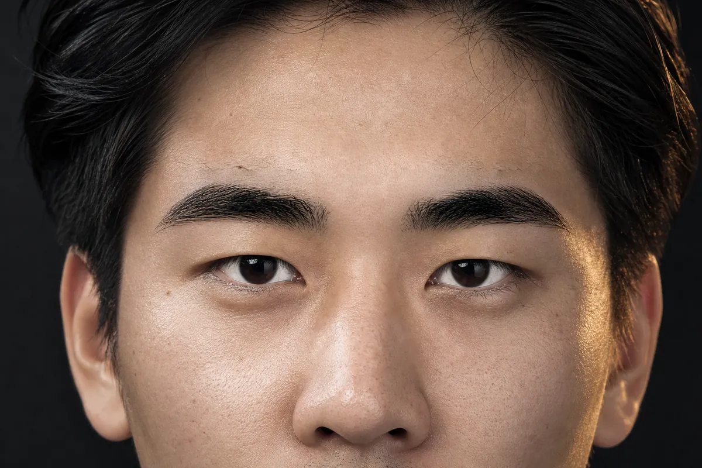
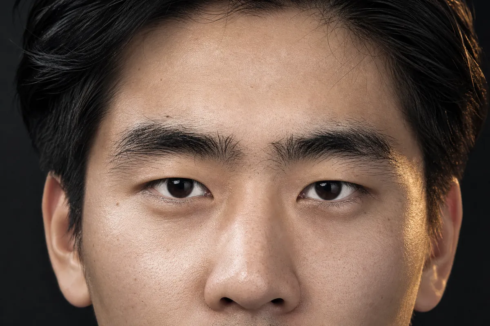
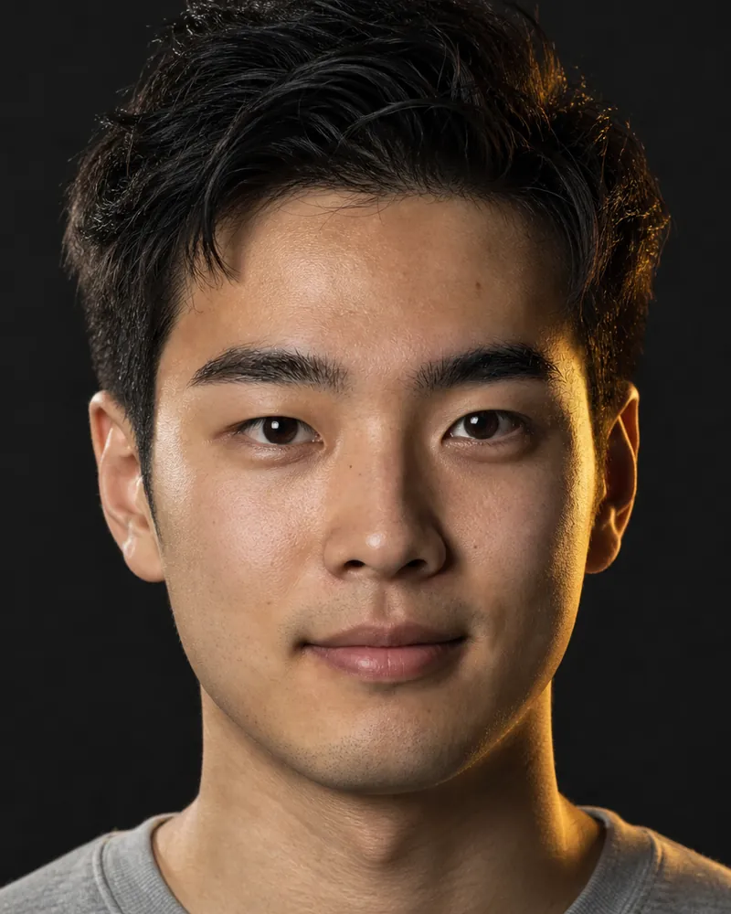
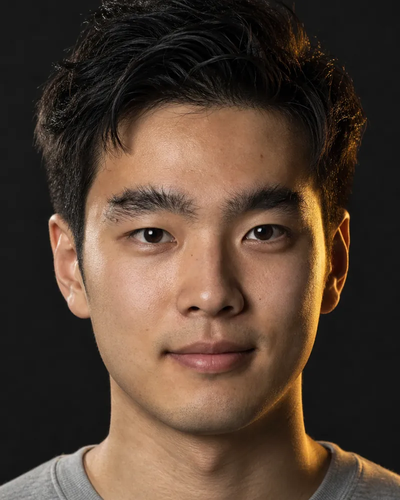

#ボサボサ眉
伸ばしっぱなしタイプ清潔感が伝わりにくい


眉頭 眉山 眉尻 ※画像はイメージです眉毛WAX 初回¥5,900／眉毛パーマ＋WAX 初回¥6,980（税込）
JR蒲田駅西口 徒歩2分／8:30〜21:00
CHECK
社会人になって、身だしなみは変わったはず。
でも眉は、自己流か、ほぼ手つかず。
思い当たるタイプはありますか。
#ボサボサ眉
#つながり眉
#剃りすぎ眉
#左右バラバラ眉
WHY BROW
眉は「顔の額縁」。
人は話すとき、相手の目元を見ています。
そのすぐ上にある眉は、清潔感や表情の印象を
黙って左右するパーツです。
が男性に選ばれる
5つの理由
男ひとりで眉サロンって、
正直ちょっと入りづらい
40%以上
お客様に占める男性の割合
「眉毛サロンは女性のもの」と思われがちですが、当店はお客様の40%以上が男性です。眉毛サロンがはじめての方も多く、「何をどう頼めばいいか分からない」という状態でも大丈夫。希望がまとまっていなくても、カウンセリングで一緒に決めていきます。
施術中の顔を、
ほかの人に見られたくない
施術は半個室の空間で、スタッフと1対1。となりの視線を気にせず、リラックスして受けられます。「眉を整えているところを見られるのは気まずい」という方にこそ、安心していただける環境です。
いかにも“整えました”な眉は、
職場で浮きそう
目指すのは、気づかれないのに印象が良くなる眉。骨格・目の形・毛の生え方を見ながら、黄金比をベースに眉頭・眉山・眉尻の位置をあなたの顔に合わせて決めていきます。細くしすぎない、整えすぎない。スーツにもオフの日にもなじむ、自然な仕上がりです。
平日は仕事。
通う時間なんてない
JR蒲田駅西口から徒歩2分。朝8:30から夜21:00まで営業しているので、出勤前にも仕事帰りにも立ち寄れます。メンズ眉毛WAXは約50分。一度整えれば約3〜4週間が目安なので、通うのは月に一度ほどです。
失敗したら、
1か月そのまま…？
4.9Google口コミ評価
99件
KATE stage LASH は、眉とまつ毛だけを扱う専門店。全国30店舗以上・年間4万人以上の施術実績があり、Google口コミは4.9（99件・2026年11月時点）です。太い・硬い・量が多いといった男性の眉の特徴をふまえて、美容師免許を持つスタッフが担当します。
働く男の第一印象には
眉が効く。
PROCESS
スクロールすると、眉が整っていきます。
STEP 1
なりたい印象を伺い、骨格と毛の流れを確認します。眉頭・眉山・眉尻の位置を決めて、仕上がりの形を設計。「おまかせ」でも大丈夫です。
STEP 2
設計したラインの外側にある余分な毛や産毛を、WAXでまとめてオフ。剃るのと違って根元から取り除くので、輪郭がすっきりします。
STEP 3
長さと濃さを整える工程です。毛量の多い部分を間引いて濃淡のムラをなくし、長い毛はカットで揃えます。
STEP 4
毛流れを整え、鏡で左右のバランスを確認して完成。WAXをした部分は乾燥しやすいので、1週間ほどはしっかり保湿をお願いしています。
BEFORE / AFTER
ストリップを左右に動かして、見比べてください。


眉の輪郭を整えて、余分な毛をオフ。太さは残した自然な仕上がりのイメージです。
※画像は仕上がりのイメージです（AIで作成したイメージ画像で、実際のお客様の写真ではありません）。仕上がりには個人差があります。
Instagramを見る（@katestagelash_kamata）VOICE
4.9Google口コミ 99件（2026年11月時点）
VOICE 01
Y.H様（25歳・就活生）眉毛WAX
就活で10社落ちて、何が悪いのかわからなかった。友達に勧められて眉毛を整えてから、面接官の反応が明らかに変わった。第一志望から内定もらえました。
VOICE 02
S.M様（28歳・SE）ハリウッドブロウリフト
正直、眉毛サロンに行くのは恥ずかしかった。会社の人にバレたらどうしようって。でも半個室だし、誰とも顔を合わせないし、全然平気でした。彼女に『なんか最近カッコよくない？』って言われて、内心ガッツポーズ。
VOICE 03
T.K様（32歳・営業）眉毛WAX
営業成績が伸び悩んでいた時、藁にもすがる思いで来ました。施術後、お客様から『○○さん、なんか雰囲気変わりました？』と言われるように。眉毛変えただけなのに商談の成約率が上がった気がします。もう3ヶ月通ってます。
VOICE 04
K.N様（35歳・経営者）ハリウッドブロウリフト
マッチングアプリでいいねが全然来なかった。写真を変えてもダメ。眉毛整えて写真撮り直したらいいね数が3倍になった。今では毎月通ってます。ビジネスでも恋愛でも第一印象は大事ですね。
※お客様個人の感想であり、効果を保証するものではありません。一部抜粋して掲載しています。
ACCESS
アーケードを通るので、雨の日も歩きやすい道です。
目の前の「SunRise（サンライズ）」アーケードへ入ります。
「ちよだ鮨」の曲がり角まで進みます。
そのまま突き当たりまで進みます。
「三晃電機」を目印に、まっすぐ約30秒。
入口で「501」を押してから「呼出」ボタンを押してください。入口が少し狭いのでお気をつけて。
KATE stage LASH 蒲田西口店は、JR蒲田駅西口から徒歩2分にある眉とまつ毛の専門店です。メンズ眉毛WAX、眉毛パーマ（ハリウッドブロウリフト）、メンズまつ毛パーマに対応しています。
FLOW
クーポン（メニュー）と希望の日時を選びます。空き状況を見ながら、24時間いつでも予約できます。
蒲田駅西口から徒歩2分。半個室で、なりたい印象を伺ってからスタートします。
メンズ眉毛WAXは約50分。骨格分析から仕上げまで、スタッフが1対1で担当します。
鏡で左右のバランスを確認して完了。お支払いは完全キャッシュレスで、クレジットカード・電子マネー・QRコード決済が使えます。
FAQ
はい。お客様の40%以上が男性で、眉毛サロンがはじめての方も多くいらっしゃいます。施術は半個室で行うので、周りの目も気になりません。
WAXをはがす瞬間にピリッと感じる程度で、すぐにおさまる方がほとんどです（感じ方には個人差があります）。不安な方や肌が敏感な方は、施術前にお伝えください。様子を見ながら進めます。
骨格と毛の生え方に合わせて設計し、自然で清潔感のある仕上がりを基本にしています。「細くしすぎたくない」「気づかれない程度に」といったご希望も、カウンセリングでそのままお伝えください。
眉毛WAXは約3〜4週間、ハリウッドブロウリフトは約4〜6週間が目安です（個人差があります）。月に1回ほどのメンテナンスがおすすめです。
眉毛WAXは、設計したラインの外側にある余分な毛や産毛をWAXで取り除き、眉の輪郭を整えるメニューです（約50分・持続の目安 約3〜4週間）。眉毛パーマ（ハリウッドブロウリフト）＋眉毛WAXは、パーマで毛流れを整えてから、WAXで輪郭を仕上げるメンズ限定のメニューです（約60分・持続の目安 約4〜6週間）。毛が下向きやバラバラに生える方、朝の身支度を楽にしたい方には、眉毛パーマ＋眉毛WAXがおすすめです。
特別な準備は必要ありません。ご自身でのお手入れ（剃る・抜く）は、できるだけ控えてお越しいただくと、デザインの幅が広がります。
はい、対応しています。下向きのまつ毛を自然に立ち上げるメニューで、眉毛WAXとのセットもご用意しています。
完全予約制です。ホットペッパービューティーからご予約ください。当日でも空きがあればご案内できますので、予約ページで空き状況をご確認ください。
日程の変更・キャンセルは、分かった時点でお早めにお手続き・ご連絡をお願いします。ご連絡のないキャンセルの場合は、キャンセル料を申し受けることがあります。
完全キャッシュレスです。クレジットカード、電子マネー、QRコード決済（PayPayなど）をご利用いただけます。現金はご利用いただけませんので、ご注意ください。
次の「大事な日」は、いつですか。
初対面の商談、プレゼン、転職の面接、デート。
予定が決まっているなら、眉を整える日も
決めてしまいましょう。
蒲田駅から2分、約50〜60分です。
メンズ眉毛WAX（間引き込）
初回¥5,900税込
約50分／持続の目安 約3〜4週間
メンズ限定眉毛パーマ＋眉毛WAX（ハリウッドブロウリフト）
初回¥6,980税込
約60分／持続の目安 約4〜6週間
ホットペッパービューティーの初回クーポン価格です